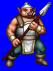
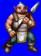
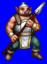
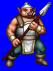

Height: Human height Weight: Human weight
Habitat: Cave Origin: England
Meaning: From the Roman God "Orcus"
First created for J.R.R. Tolkien's "Lord of the Rings", orcs appear as small creatures with piglike faces, long arms, and sparse tufts of hair. Because orcs were the minions of Sauron in Lord of the Rings, orcs are usually cast as servants of a powerful lord in RPGs. It bears hostility for most other races. Half-orcs are a derivative race that combines human and orc features. It usually attacks by trying to overpower its opponent with its superior reach and fangs.